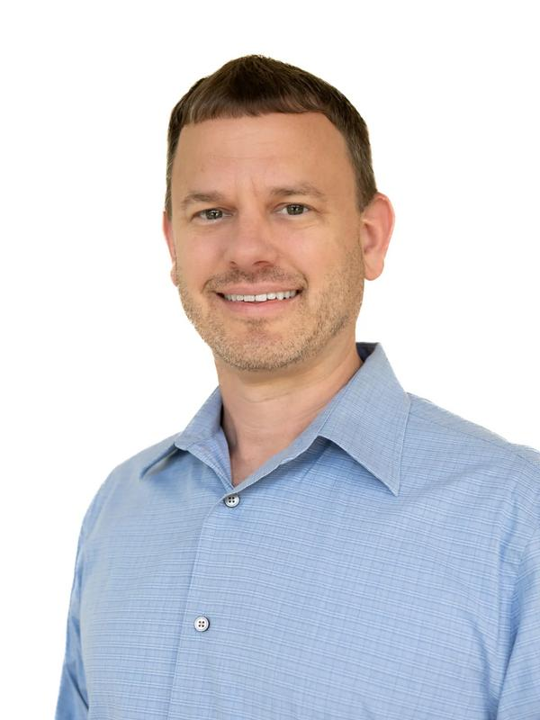
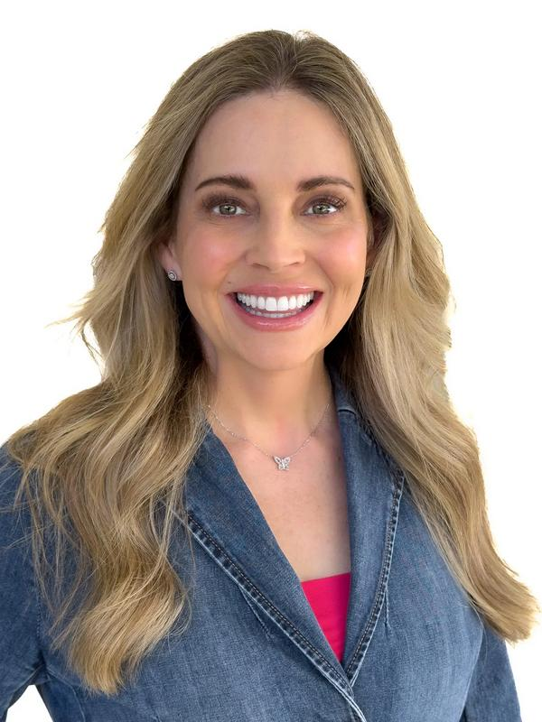

Meet the Team
Our Story
Our integrated approach guides clients through every phase of the project lifecycle: from initial concept and planning through construction execution and sustainable, long-term operations. This comprehensive oversight optimizes building performance, reduces lifecycle maintenance costs, and ensures safe, functional environments for staff, patients, and visitors alike.
As an independent owner's representative, we do not design facilities or perform trade construction. Our sole priority is to protect your capital investment and ensure project delivery directly aligns with long-term operational needs. By pairing Mark's decades of commercial engineering oversight with Amanda's background in healthcare operations and executive administration, we deliver practical leadership for both commercial and institutional developments.
From early design through final commissioning, we establish cross-team accountability, control financial risk, and optimize long-term facility performance, ensuring every space effectively supports the professionals and organizations operating within it.

Mark Stemmans, PE
Founding MemberMark is a founding member of Convergent Method and a licensed Professional Engineer. A 2002 graduate of Louisiana State University with a Bachelor of Science in Construction Management from the College of Engineering, he has spent his career leading complex, multi-million-dollar commercial construction and infrastructure programs totaling billions of dollars. Mark currently serves as the Construction Program Manager at Baylor St. Luke's Medical Center in Houston, Texas, where he leads the owner-representative team overseeing the McNair campus development, including a new ambulatory care center and major hospital tower renovations and expansions within the Texas Medical Center. His institutional oversight spans financial reporting, contract administration, schedule management, and cross-functional coordination. His portfolio spans a wide range of high-stakes environments, including congested urban sites, active healthcare facilities, research laboratories, mental health centers, maximum security infrastructure, airport terminals, Class A commercial spaces, transit systems, and complex mechanical, electrical, and data networks. Mark's core vision for Convergent Method centers on unifying project teams and protecting the owner's capital. By applying disciplined risk management, rigorous execution, and a sharp focus on return on investment to every engagement, he ensures that complex developments are delivered efficiently and built for long-term financial and operational success.

Amanda Stemmans, MS, APRN, FNP-C
Founding MemberAmanda is a founding member and Chief Operations Officer of Convergent Method, bringing 25 years of healthcare experience in clinical research, complex case management, and advanced clinical practice to real estate development. She graduated Magna Cum Laude from Texas Woman's University with a Master of Science in Nursing and is a Board-Certified Family Nurse Practitioner. Throughout her career, she has directed high-level clinical pathways, medical operations, and patient-focused care systems across integrated healthcare settings. Amanda currently oversees firm operations, project administration, and document control for major infrastructure programs, including strategic owner-representative engagements with Baylor St. Luke's Medical Center within the Texas Medical Center. Her day-to-day leadership covers business management, compliance documentation, quality control, and cross-functional administrative coordination. Her clinical and administrative background covers diverse care and institutional environments, including outpatient clinics, inpatient acute units, clinical research sites, specialized centers, and ambulatory facilities requiring strict compliance and infection control standards. Amanda's core vision for Convergent Method focuses on bringing clinical reality into facility programming to protect the end-user experience. By combining disciplined operational management with principles from her pursuit of Evidence-Based Design Accreditation and Certification (EDAC), she ensures current environments are functional, compliant, and built to support the safety, efficiency, and well-being of staff, patients, and visitors.
25+ years of experience
With leadership experience spanning multi-million-dollar capital projects across multiple states, to internal clinical and hospital operations, our team brings seasoned cross-industry expertise to every engagement.
Unwavering Performance
A commitment to excellence is our baseline. By pairing rigorous project delivery with long-term operational sustainability, we ensure high-performance facilities that yield lasting value well past closeout.
Family Owned + Operated
Convergent Method was built on direct accountability and personal investment. Because our firm carries our family name, our dedication to client success, integrity, and exceptional project outcomes remains central in everything we do.